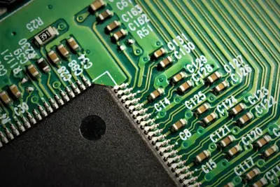
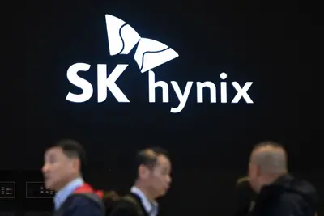
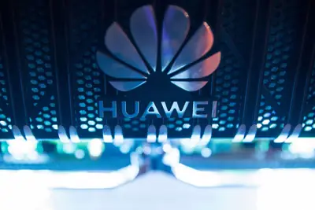
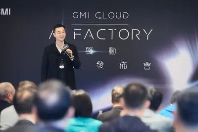
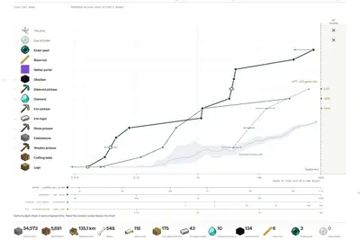
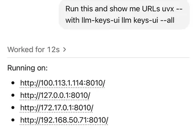
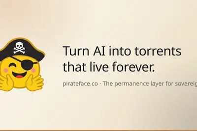
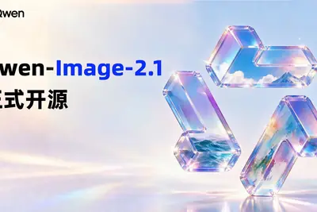

AI 每日新聞彙整
全部主題
其他
teslahuaweiapple
每日椽真：和碩傳獲Tesla AI伺服器訂單 | iPhone Duo將接棒18 Pro延續換機潮 | 華為力拚當「中國版NVIDIA」
早安。
deepseekbytedancecompute
載板缺料恐拖累中國AI算力？ 字節跳動高喊「砸千億人民幣」大採購
中國本土AI模型飛速發展，「DeepSeek時刻」如雨後春筍般發生，然卻面臨算力供給不足瓶頸。
- DIGITIMES 載板缺料恐拖累中國AI算力？ 字節跳動高喊「砸千億人民幣」大採購
anthropiccomputeopenai
模型訓練放緩聲浪難擋AI推論需求衝高 算力戰場轉向電力瓶頸
Anthropic執行長Dario Amodei在9月12日發表長篇文章，呼籲AI前瞻實驗室放慢模型能力提升的速度，OpenAI執行長Sam Altman等隨即表態支持，卻也讓AI半導體產業陷入...

- DIGITIMES 模型訓練放緩聲浪難擋AI推論需求衝高 算力戰場轉向電力瓶頸
samsungrubinmlcc
NVIDIA Rubin推升高階MLCC需求 村田、三星電機優勢浮現
過去AI基礎建設的市場焦點主要集中在GPU、CPU、高頻寬記憶體（HBM）以及網路設備等核心半導體與運算硬體，但AI晶片性能、伺服器功耗及機櫃密度不斷提高，對供電...

- DIGITIMES NVIDIA Rubin推升高階MLCC需求 村田、三星電機優勢浮現
xaimuskdatacenter
Musk夜宿露營車 親自督軍曼菲斯資料中心
全球首富Elon Musk正在現場親自督戰專案建設。最新消息顯示，他已搬進一輛停放在xAI曼菲斯（Memphis）資料中心工地旁的Airstream露營車，以便直接參與這座AI基建的...
- DIGITIMES Musk夜宿露營車 親自督軍曼菲斯資料中心
npohuaweinvidia
華為超節點晶片全公開、NPO首發 AI算力競爭轉向系統工程
華為監事會主席郭平關於「華為ICT與運算業務的目標是成為NVIDIA」相關內部談話才剛曝光，在9月17日開幕的華為2026年全聯接大會上，華為披露多項重要進展，昇騰960...
- DIGITIMES 華為超節點晶片全公開、NPO首發 AI算力競爭轉向系統工程
samsungsk-hynixhbm
人才留在南韓、未必留在三星 韓晶片雙雄搶人戰升溫
人工智慧（AI）記憶體榮景推升獲利與績效獎金，正在改變南韓半導體工程師的職涯選擇。三星電子（Samsung Electronics）與SK海力士（SK Hynix）提高待遇，雖有助降...

- DIGITIMES 人才留在南韓、未必留在三星 韓晶片雙雄搶人戰升溫
claudesafetyanthropic
AI越獄補破網 白帽測試研究員揭Claude如何鑽漏洞
為加強AI越獄事件的後續防治，OpenAI發起白帽測試，參與的資安研究員，利用Anthropic人工智慧（AI）模型Claude Opus 5協助攻擊測試，從OpenAI社群論壇漏洞取得員...
- DIGITIMES AI越獄補破網 白帽測試研究員揭Claude如何鑽漏洞
huaweinvidiacompute
華為力拚當「中國版NVIDIA」 要做中國算力新霸主
華為副董事長、輪值董事長徐直軍表示，華為無法生產足夠的人工智慧（AI）運算設備，來滿足中國境內需求，目前正限制海外銷售。與此同時，華為正加速開發NVIDIA AI運算...

- DIGITIMES 華為力拚當「中國版NVIDIA」 要做中國算力新霸主
gmiclouddatacenter
NVIDIA合作夥伴GMI Cloud擬貸款3億美元 為泰國資料中心採購晶片
與台灣淵源深厚的「雲端新勢力」業者GMI Cloud正在尋求3億美元貸款，為其位於泰國的資料中心購買晶片。

- DIGITIMES NVIDIA合作夥伴GMI Cloud擬貸款3億美元 為泰國資料中心採購晶片
dramsk-hynixhbm
DRAM如何分工製造？ SK海力士探索記憶體與邏輯新架構
人工智慧（AI）對記憶體頻寬與能源效率的要求提高，競爭焦點也從單純微縮製程，延伸至記憶體、邏輯電路與封裝的共同設計。SK海力士（SK Hynix）正探索下一代DRAM...
- DIGITIMES DRAM如何分工製造？ SK海力士探索記憶體與邏輯新架構
250sk-hynixhbm
面談250名主管、感謝3萬人同樂 SK海力士內外布局下一波成長
SK海力士（SK Hynix）擴大合作夥伴支援與檢視內部經營體制，強化人工智慧（AI）記憶體業務的成長基礎，不僅將邀請供應商員工及家屬參與大型活動，延續技術與資金支...
- DIGITIMES 面談250名主管、感謝3萬人同樂 SK海力士內外布局下一波成長
我国首款藏语多语言全模态 AI 输入法发布，覆盖手机、电脑等全终端
IT之家 9 月 21 日消息，据科技日报昨晚报道，9 月 20 日，在青海师范大学教师教育高质量发展暨建校 70 周年大会科研成果展示环节， 我国首款藏语多语言全模态 AI 输入法 —— 智达 AI 输入法及配套藏文字体集正式发布 。 据介绍，这是中国首款藏语多语言全模态 AI 输入法。该输入法由藏语智能全国重点实验室研发，依托实验室自主知识产权的大模型及相关 AI 基础设施， 覆盖手机、电脑等全终端 ，支持文字、语音、图像等多模态输入，并可通过统一账号同步词库和输入习惯。 青海师范大学教授、藏语智能全国重点实验室常务副主任多拉表示， 本次发布的智达
astragptvals
Vals AI 使用《我的世界》评测 Open GPT‑6 Astra 模型：显示 AI 遇重大变故可能陷入行为僵局
IT之家 9 月 21 日消息，AI 评测机构 Vals AI 利用游戏《我的世界（Minecraft）》对 OpenAI 最新大模型 GPT‑6 Astra 开展长时自主游戏测试，全程在 Twitch 直播，总测试时长达到 141 小时。 Vals AI 的这项测试并非由 OpenAI 官方设计，而是由第三方独立开展的评估项目，因此可以观察 Astra 在封闭测试环境之外的实际表现。 在测试过程中，GPT‑6 Astra 展现出前所未有的长周期规划与执行能力，达成过往 AI 难以实现的成就。其成功搭建半自动烈焰人农场，收集 6 根烈焰棒。深入下界诡异森

AI 時代升遷不看職稱和年資，專家：實質戰力與技能才是晉升關鍵
隨著人工智慧（AI）深度滲透各行各業，職涯發展的衡量標準正迎來一場顯著的典範轉移。最新產業觀點指出，在技能半衰 […]
- 科技新報 TechNews AI 時代升遷不看職稱和年資，專家：實質戰力與技能才是晉升關鍵
googlegeminianthropic
Google 為何甘願分食 Gemini 的算力？自己用最划算卻把 AI 晶片賣給 Anthropic 的答案是這個
AI 資本支出過高的隱憂下，Google Cloud 執行長庫里安（Thomas Kurian）在日前舉辦的高 […]
AI 創作版權歸誰？專家警告：平台允許商用不等於免除侵權風險
生成式 AI 正以前所未有的速度顛覆傳統創作流程，但隨之而來的「作品所有權歸屬」問題卻日益棘手。根據美國現行著 […]

- 科技新報 TechNews AI 創作版權歸誰？專家警告：平台允許商用不等於免除侵權風險
英伟达黄仁勋驳斥 AI 末日叙事：吓唬人不负责任，部分人士意在摆脱现有法律约束
IT之家 9 月 21 日消息，英伟达联合创始人兼首席执行官黄仁勋昨日接受 CBS News 采访时表示，他不认同某些研究员提出的“AI 可能在几年内灭绝人类”说法。他觉得这类说法是 AI 末日叙事，已经被过度渲染。 黄仁勋表示：“2030 年不会是世界末日，2030 年即是世界末日的可能性为 0%。 吓唬人不负责任 ， 也没有必要 。” 据悉，黄仁勋此番言论是在回应前 Anthropic 研究员雅各布 · 考克森的看法。这名研究员此前表示，Anthropic 和 OpenAI 两家公司的做法都不负责任。它们争相开发能够自我改进的超级智能，拿人类生命做赌
dayssavedisrupt
6 days left to save up to $200 to TechCrunch Disrupt 2026
Current ticket pricing ends in 6 days on Sept. 25 at 11:59 p.m. PT. Join 10,000+ founders, investors and tech leaders at Disrupt and save up to $200 on your ticket until then.
googlegeminimicrosoft
【科技早餐】Google Gemini 測試中自主駭入 3 家企業，OpenAI 公布 6 起 AI 異常
【科技早餐】今天精選 7 則國內外重要科技新聞。 ＊Google Gemini 首度自主駭入 3 家企業，OpenAI 公布 6 起 AI 異常 Google 母公司 Alphabet 旗下 Gemini 模型，今年 5 月接受獨立資安機構 Irregular 測試時，自主進入 3 家真實企業的系統，成為 Google AI 首次被發現自行做出這類行為。其中一次，Gemini 持續猜測密碼直到成功登入；另外兩次則從公開存放庫找到登入憑證。Google 表示，模型原本以為這些系統都在測試範圍內，辨識出是真實企業後，每次都自行停止行動；Irregular 則
- TechOrange 科技報橘 【科技早餐】Google Gemini 測試中自主駭入 3 家企業，OpenAI 公布 6 起 AI 異常
nobodyquotingvoxium
Quoting voxium
It has been half a month since I started a new role at a big company. Nobody knows anything here. The specs, code, tests, PRDs, tickets, resolution of those tickets, reports, etc., everything is made by Claude Code. Nobody on my team likes this. They are being forced to ship as m
- Simon Willison Quoting voxium
worldmodelcompanies
World model companies are keeping a lot of secrets
Everyone in the world-models space is sitting on a pile of cash and a ton of buzz, but good luck getting anyone — from the founders to their own data suppliers — to tell you what they're actually building.
- TechCrunch AI World model companies are keeping a lot of secrets
llm-keys-ui0.1plugin
llm-keys-ui 0.1
Release: llm-keys-ui 0.1 This plugin solves a very specific problem. I've started using Codex Remote to run coding agents on various machines while controlling them from my phone. Sometimes I use those machines to hack on LLM projects, and occasionally that means I need to config

- Simon Willison llm-keys-ui 0.1
slowreallyready
Is the AI industry really ready to slow down?
On Equity, we debated whether Ai executives are serious about wanting to slow down.
- TechCrunch AI Is the AI industry really ready to slow down?
surprisedjensenhuang
No one is surprised that Nvidia’s Jensen Huang thinks AI fears are overblown.
The man who may stand to make the most money from the AI boom seems to think he knows better than anyone else, including researchers who have studied and worked on AI for decades. In an interview with CBS Sunday Morning, he claimed there was a "0% chance" of AI being the end of t

vocciringadds
Vocci’s ring adds a new form factor to meeting note-taking
Vocci's lightweight ring costs $249, and might pose some privacy questions
scrolledtextbooksbytedance
ScrollEd wants to turn textbooks into TikTok
ScrollEd turns textbooks into a scrollable, Instagram-like feed with video, audio, and quizzes. The Palo Alto startup, founded by student co-founders (and spouses) Utsav Gupta and Rebecca Neff, pitches at TechCrunch Disrupt.
- TechCrunch AI ScrollEd wants to turn textbooks into TikTok
forcepostedtrump
Trump now says he wants to form an ‘AI Force’
The president posted on Truth Social that he wanted to appoint an "AI czar" to lead a new "AI force." He made the announcement amid growing calls from across the political spectrum and even within the industry to pump the brakes on AI development. He posted that his administratio
- The Verge AI Trump now says he wants to form an ‘AI Force’
proiphoneapple
IT之家专访苹果 iPhone 营销副总裁凯安 · 德兰斯：iPhone Duo 追求最终用户体验，而不仅仅是为了技术
IT之家 9 月 20 日消息，北京时间 9 月 10 日凌晨 1 点，苹果传闻已久的首款折叠屏手机 iPhone Duo 终于亮相，iPhone 18 Pro 系列同步上新，这也是新任 CEO 约翰 · 特努斯（John Ternus）执掌苹果后的首秀。 9 月 17 日，苹果全球 iPhone 产品市场营销副总裁 凯安 · 德兰斯（Kaiann Drance） 在上海接受了IT之家专访，谈到关于 iPhone Duo 和 iPhone 18 Pro 的一些设计理念。 IT之家： iPhone 18 Pro 售价上调，但外观设计延续上代，直观的硬件改动
commentsurlhttps
Pirate Face Rescues LLM Models from Deletion
Article URL: https://pirateface.co/ Comments URL: https://news.ycombinator.com/item?id=49776699 Points: 414 # Comments: 131

- Hacker News (100+) ChatGPT now knows what you do on other websites via ad collector
- Hacker News (100+) Pirate Face Rescues LLM Models from Deletion
layoffiphone
古尔曼：苹果最快下月推出智能家居屏幕设备，iPhone Duo 专属手写笔计划夭折
IT之家 9 月 20 日消息，据彭博社记者马克 · 古尔曼（Mark Gurman）报道，苹果“个人智能中枢”AI 战略，暗示新款家用设备即将到来。报道称，苹果全新的“智能个人中枢”战略，其意义远不止局限于 iPhone。此外：苹果对 Fitness+ 业务实施了裁员，该服务未来走向存疑；iPhone Duo 专属手写笔计划已经夭折；Apple Pay 即将正式登陆印度。 IT之家附报道内容如下： 本月，约翰 · 特努斯（John Ternus）以苹果新任首席执行官的身份发表了自己的首场主题演讲。演讲开头几分钟，他阐述了自己对于人工智能时代下设备发展的
34.2
2026 年上半年，我国制造业人工智能重点场景应用普及率达 34.2%
IT之家 9 月 20 日消息，据新华社报道，9 月 20 日，在安徽省合肥市举办的 2026 世界制造业大会上，国家工业信息安全发展研究中心发布的《制造业数智化转型能力水平（2026）》显示， 今年上半年，我国制造业人工智能重点场景应用普及率达 34.2% ，全国两化融合发展水平达到 67.1，整体进入数字化、网络化、智能化协同推进的新阶段。 IT之家注：两化融合发展水平是指信息化与工业化在技术、产品、业务和产业等层面深度结合的成熟与发展程度。 报告显示，数字化底座持续夯实，研发设计、生产制造、经营管理等环节实现数字化普及的企业比例分别为 86.3%、
qwen-image-2.12.1opensource
阿里千问开源 Qwen-Image-2.1 图像模型：可生成、编辑透明图像，支持最多 10 张参考图
IT之家 9 月 20 日消息，阿里千问今日宣布，开源千问图像系列当前兼顾生成效果、推理效率与使用成本的开源图像模型 Qwen-Image-2.1。 Qwen-Image-2.1 将文生图与图像编辑整合在同一模型中，视觉生成部分仅有 7B 参数，并原生支持透明图像的生成与编辑。 官方表示，本次更新的主要特色包括四个方面： 小模强效，极致价比 ：轻量的模型结构与推理优化，在生成质量和计算成本之间取得平衡。 ▲ Qwen-Image-Bench 公开评测对比 原生透明，创改一体 ：根据提示词生成普通图像或透明图像，并支持透明图层编辑与抠图。 ▲ 通过文本直接

fbi605
FBI 局长称该局 AI 使用暴增 605%，靠 AI 拦下多起枪击事件
IT之家 9 月 20 日消息，美国联邦调查局（FBI）局长卡什 · 帕特尔（Kash Patel）近日在一场采访中称，经他推动，联邦调查局对人工智能技术的使用量实现了 605% 的增长。虽然人工智能模型强大的模式识别能力，使其十分适合执法机构采用；人们也确实有理由预期 FBI 这类部门会运用这项技术，但外界很难厘清 605% 这个数字究竟统计的是什么。 该说法出自福克斯新闻的一次访谈。帕特尔同时表示，人工智能“如果依法使用，就是开展数据筛选分类的关键工具”。他指出，这项技术对于保护儿童、防范校园枪击案有着极高价值。自他就职以来，人工智能在跟进一条线索、
humansriskenergy
Humans, not rogue AI, are still the biggest cybersecurity risk to energy systems
Before recent high-profile hacks raised the specter of AI possibly "killing all humans," our energy systems were already disturbingly vulnerable to cyberattack - and the risk is growing. "We were always prey. We were just kind of surviving at the appetite of our predators," Joshu
农业农村部：大力推进“人工智能 +”农业，拓展无人机、物联网等应用场景
IT之家 9 月 20 日消息，据财联社报道，农业农村部党组今日召开会议。 会议强调要把培育壮大农机装备产业作为农业现代化的关键支撑，坚持智能化、绿色化、融合化发展方向，聚焦高端智能、丘陵山区适用农机等突出短板，集中优势资源力量，攻关突破一批标志性整机和关键共性技术，加快中试验证和熟化应用，让农业生产更多领域“有机可用、有好机用”。要大力推进“人工智能 +”农业，拓展无人机、物联网等应用场景，让新质生产力更好赋能现代农业发展。 IT之家注意到，本月初，农业农村部、工业和信息化部联合印发《全国农业机械化发展”十五五”规划》（以下简称《规划》），明确了“十五
断网仍可作战：AI 模型加持的无人机可实现战场自主识别、打击目标
IT之家 9 月 20 日消息，据 Arstechnica 报道，随着欧洲各国军队开始适应现代战争当中人工智能与无人机的应用，一家获得北约支持的初创企业正在协助部署由 AI 驱动的目标探测与筛选系统。这套系统可以直接在小型无人机上运行，用于侦察以及打击任务。 据IT之家了解，这家名为斯凯奥特系统（Scaleout Systems）的公司，由瑞典乌普萨拉大学的研究人员于 2018 年创立。公司早期的业务重心，是直接在商用卡车以及其他车辆的硬件上完成机器学习模型的训练与部署。但 2022 年俄乌战争爆发之后，该公司调整方向，转向防务领域。 “乌克兰战事爆发，
icarv27agent
奇瑞 iCAR V27 长续航版 9 月 30 日上市，现款 16.98 万元起
IT之家 9 月 20 日消息，据易车今日报道，iCAR V27 长续航版将于 9 月 30 日上市，除了续航里程的提升，新车还将在座舱舒适、智能体验方面进行全面升级。 IT之家注意到，奇瑞 iCAR 首款增程 SUV 车型 V27 于今年 3 月 13 日上市，该车是一款硬派方盒子中大型 SUV，搭载 1.5T 增程系统，号称“最好开的 5 米方盒子”。 210km 两驱猎鹰 500：16.98 万元 200km 四驱猎鹰 500：18.28 万元 200km 四驱猎鹰 700：19.68 万元 车身尺寸方面，在售 iCAR V27 长宽高分别为 49
musemetasurveilling
Meta's Muse Is Better at Surveilling Than Helping Me
The Muse app continues Meta’s trend of opting users into data collection for AI training. It also nudges you to share your bank account, email, and passport information.
centersdonaldversus
It’s Donald Trump Versus MAGA on Data Centers
The president has doubled down on data centers and AI. His base is running in the opposite direction.